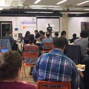
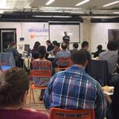

TWEETS
4,092
FOLLOWING
1,690
FOLLOWERS
7,891
FAVORITES
2,458
LISTS
6
The Iron Yard
@TheIronYard
Learn to code, life is too short for the wrong career. The top intensive code school in the country
 National
National
 theironyard.com
theironyard.com
 Joined May 2012
Joined May 2012
 278 Photos and videos
278 Photos and videos


 



New to Twitter?
Sign up now to get your own
personalized timeline!
Sign up
You may also likeRefresh

Peter Barth
@peterbarth

ericdodds
@ericdodds

Marty Bauer
@bauermarty

Refresh Charleston
@RefreshCHS

Sarah Lodato
@sarahbethlodato
TrendsChange
#EntourageMovie
Promoted by Entourage Movie
#NationalDonutDay
#PSYYnaAtAngelo
#WorldEnvironmentDay
#AFLFreo Tigers
Jerry Collins
#bringbackmark
Farrakhan
Zayn Dinabu Malik
Irina Shayk
Arabian Queen
© 2015 Twitter About Help Ads Info
Tweets Tweets & Replies Photos & videos
Pinned Tweet
The Iron Yard
@TheIronYard Aug 12
How Far We've Come:
blog.theironyard.com/post/945325051...
The Iron Yard
How Far We've Come
By John Saddington, people & Ops To look at the above image is mind-blowing (and that's just one of the many campuses that we have around the country!) To think that only a few months ago...
View on web
The Iron Yard retweeted
WordPress Charleston
@wpCHS 19h
A few days til our #WordPress meetup w/ @HeatherSolos via @bluekeyinc & @TheIronYard: wpchs.org/meetups/monthl... #chs

The Iron Yard retweeted
Toni Aliberti
@ToniAliberti 16h
#collabtb event with @TheIronYard crew
Duncan Neal, Amie Wilt Derek Dyer and 3 others

The Iron Yard retweeted
Jesse Wolgamott
@jwo 14h
Houston ember about to happen @TheIronYard #selfiestick

The Iron Yard retweeted
Arek Goluboy
@arekgoluboy Jun 1
just noticed this Ruby on Rails class is majority female, which is awesome. @TheIronYard

The Iron Yard retweeted
VegasTech